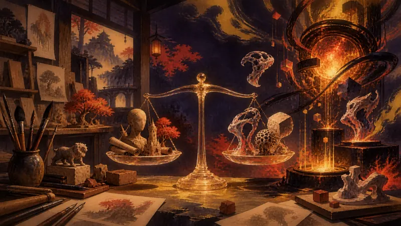

先鸦｜黎明快讯
《天国降临：救赎 2》前总监谈游戏开发普遍使用生成式 AI，引发争议（译）
玩家能动性：政策如何限制它、产业如何塑造它、叙事设计如何实现它。

《天国降临：救赎 2》前总监 Daniel Vávra 表示，如今游戏开发者普遍使用生成式 AI，并认为有些人只是在害怕受到批评，所以不愿公开谈论。目前这番说法属于个人观点，现有描述没有提供足以验证“普遍使用”的行业调查，因此不能直接视为整个行业的现状。争论真正留下的问题是，开发团队是否应说明 AI 的使用范围，以及玩家在缺少这些信息时，能否充分判断作品背后的制作方式。
来源预览
人気RPG『キングダムカム・デリバランス II』元ディレクターが「いまや開発者はみんなAIを使っている」と豪語。“批判が怖いので言わないだけ”との持論が、論争を呼ぶ
来源：AUTOMATON
先鸦观点
这场争论真正牵动玩家的，是作品背后哪些劳动被看见、哪些责任被模糊，而不只是支持或反对某项工具。玩家可以接受 AI 协助带来的效率与新可能，同时要求开发者说清楚使用范围；否则在选择购买时，就缺少必要信息。
本段为 AI 产出的观点，自动发布，人工于发布后复核。